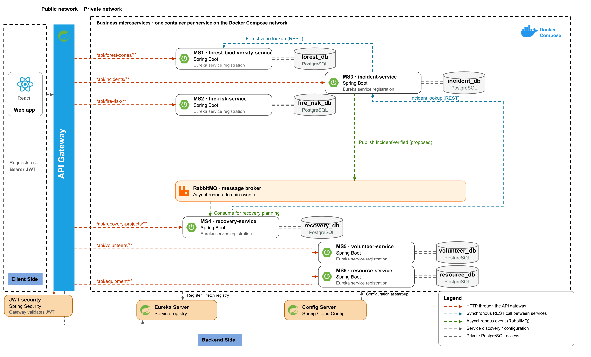
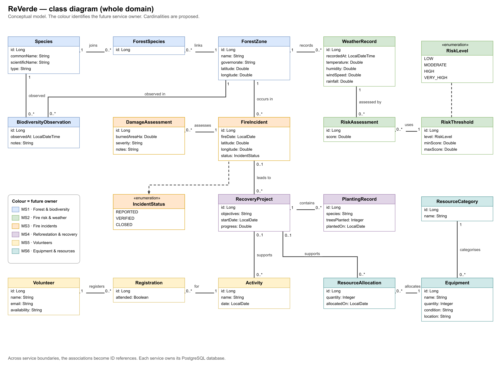
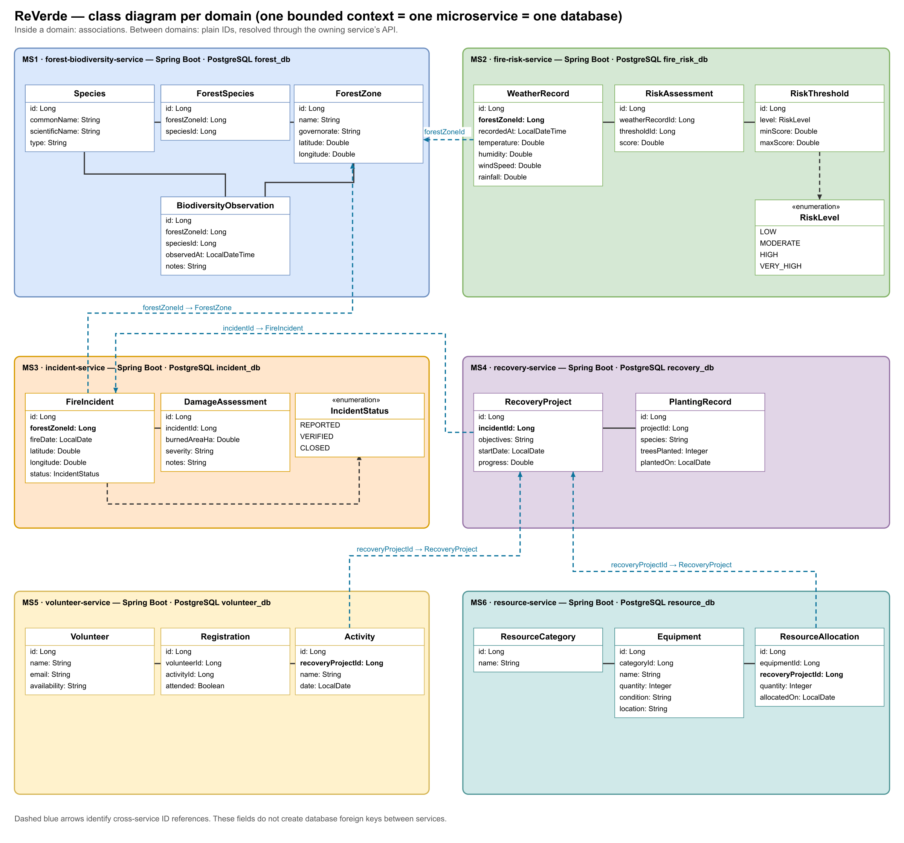
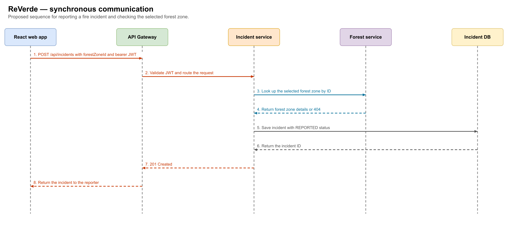
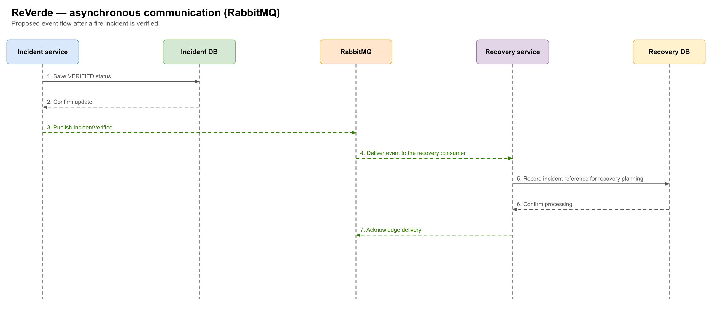
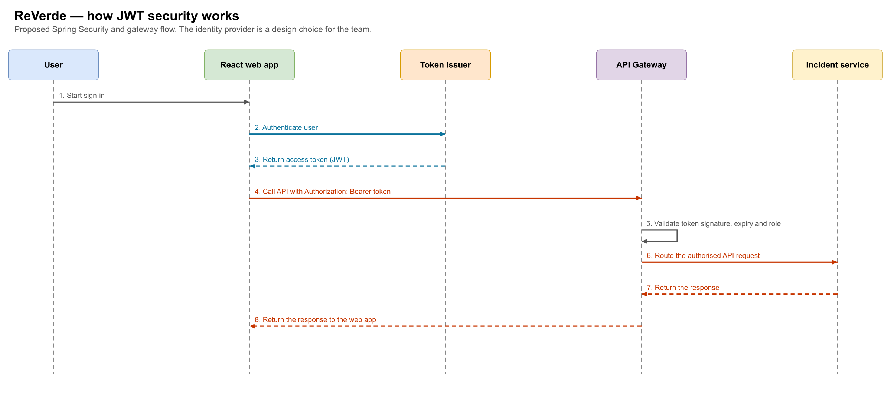

ReVerde application documentation
Entry point to the diagrams that document ReVerde, a microservices platform for forest protection and post-fire recovery in Tunisia, designed for the Distributed Web Applications module.

1Microservices architecture
The six microservices, the gateway, Eureka, Config Server, RabbitMQ and Docker.

2Class diagram
The conceptual model of the whole ReVerde domain, coloured by microservice.

3Class diagram per domain
One bounded context per microservice, with local associations and cross-service references by ID.

4Synchronous communication (REST)
Fire report sequence from the gateway through the incident service and forest zone lookup.

5Asynchronous communication (RabbitMQ)
Proposed IncidentVerified event and recovery consumer.

6How JWT security works
Sign-in, bearer JWT and gateway validation.
Files
- microservices.drawio: the single source of the six diagrams (open it in diagrams.net or draw.io Desktop).
- Session 4 PowerPoint.
img/folder: one PNG image per diagram, for your reports and presentations.
The running scenario
A user reports a fire in a forest zone. The incident service records the report, and a verified incident can inform a recovery project.